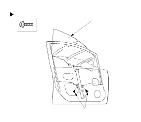
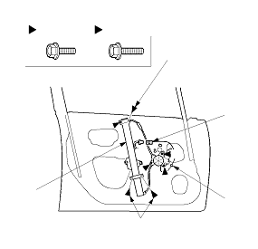
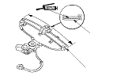

Front Door Glass and Regulator Replacement
NOTE: Put on gloves to protect your hands.
Remove these items:
Door panel
Plastic cover, as necessary
Carefully move the glass (A) until you can see the bolts, then remove them. Carefully pull the glass out through the window slot. Take care not to drop the glass inside the door.

Disconnect and detach the connector (A) and harness clip (B) from the door.
Remove the bolts (C), and loosen the bolts (D), then remove the regulator (E) through the hole in the door.

Grease all the sliding surfaces of the regulator (A) where shown.
Install the glass and regulator in the reverse order of removal, and note these items:
Roll the glass up and down to see if it moves freely without binding.
Make sure that there is no clearance between the glass and glass run channel when the glass is closed.
Adjust the position of the glass as necessary.
